Vetor aceleração centrípeta em um movimento circular.
Se o movimento for variado, mas ainda circular, a aceleração centrípeta terá módulo variável, de acordo com a velocidade referente a cada instante.
Ao percorrer uma estrada, é comum encontrarmos vários tipos de curva, algumas mais fechadas, outras mais abertas. Essa classificação é feita de acordo com o raio de curvatura da circunferência que contém o pequeno trecho de curva que consideramos.
Quanto mais aberta for a curva, maior é seu raio, conforme ilustra a figura a seguir.

Trecho de estrada com curvas de diferentes raios.
Se um automóvel vai percorrendo esse trecho com velocidade sempre de mesmo módulo, nas curvas mais fechadas (menor raio) o módulo da aceleração centrípeta será maior, pois 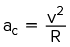.
Em particular, podemos entender que os trechos retilíneos com curvas tão abertas que o raio tende a infinito () possuem aceleração centrípeta nula.
1
No projeto de uma rodovia, os engenheiros querem garantir que qualquer curva possa ser feita com segurança a 108 km/h.
- No projeto de uma rodovia, os engenheiros querem garantir que qualquer curva possa ser feita com segurança a 108 km/h.
- No projeto de uma rodovia, os engenheiros querem garantir que qualquer curva possa ser feita com segurança a 108 km/h.
Resolução
-
Temos: 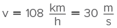.
Como: 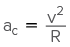, escrevemos  .
.
Se houver uma curva com raio menor que 180 m, o atrito não irá garantir a necessária aceleração para descrever a curva. O carro vai derrapar.
-
Com a pista molhada há redução do atrito e, portanto, os motoristas devem reduzir a velocidade.
Aceleração total ()
Em um movimento, além de haver a mudança de direção, a intensidade do vetor velocidade também pode estar variando. O movimento nesse caso é dito variado. A aceleração relativa a essa variação tem a direção do próprio vetor velocidade. Por essa razão, é chamada de aceleração tangencial, pois, assim como o vetor velocidade, ela é tangente à trajetória.
Em relação ao vetor velocidade, a aceleração tangencial tem o mesmo sentido caso a intensidade da velocidade esteja aumentando e sentido contrário ao do vetor velocidade caso a intensidade dele esteja diminuindo.
O módulo da aceleração tangencial é o mesmo da aceleração escalar.
As componentes do vetor aceleração.
Considerando-se as duas componentes, o vetor aceleração () é:
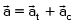
Para o cálculo da intensidade do vetor aceleração total, aplicamos o teorema de Pitágoras no triângulo retângulo destacado na imagem anterior, obtendo:
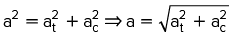
Nos movimentos retilíneos o vetor velocidade não muda de direção; logo, eles não têm aceleração centrípeta.
Nos movimentos uniformes o vetor velocidade não tem variação em seu módulo; logo, eles não têm aceleração tangencial.
Classificação dos movimentos
Conhecendo o comportamento do vetor velocidade, podemos obter o vetor aceleração. Reciprocamente, se conhecemos o vetor velocidade e o vetor aceleração em dado instante, podemos dizer se o movimento é uniforme ou variado, retilíneo ou curvilíneo e, ainda, para onde está dirigida a curvatura da trajetória neste último caso.
Com relação à forma da trajetória, o movimento pode ser retilíneo ou curvilíneo; já com relação ao comportamento do módulo da velocidade, o movimento pode ser acelerado, retardado ou uniforme.
A seguinte tabela apresenta a composição do vetor aceleração em cada um dos casos, bem como a disposição dos vetores em relação à trajetória.
|
Acelerado |
Retardado |
Uniforme |
| Curvilíneo |
|
|
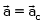
|
| Retilíneo |

|
|
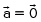
|

Princípio fundamental da Dinâmica: segunda lei de Newton
Como decorrência da primeira lei, temos que qualquer variação do vetor velocidade de um corpo (em módulo, direção ou em ambos) em relação a um referencial inercial está associada a uma força resultante não nula.
Relação entre a força resultante e a massado corpo
Os resultados das experiências com a queda livre de um corpo mostram que, aumentando a massa de um corpo na mesma proporção em que aumentamos a força resultante sobre ele (peso), a aceleração se mantém. Isso sugere que, para corpos com a mesma aceleração, a força resultante é proporcional à massa do corpo, tendo a mesma direção e o mesmo sentido da aceleração.
- Para corpos com mesma aceleração, a resultante é proporcional à massa do corpo.
- Essa resultante tem a mesma direção e o mesmo sentido do vetor aceleração.
Relação entre a força resultante e a aceleração do corpo
Sob resultante nula, um corpo se mantém com seu vetor velocidade constante. Assim, para variar o vetor velocidade de um corpo (módulo, direção ou ambos) é necessária uma resultante não nula. A grandeza que mede com que rapidez varia o vetor velocidade é o vetor aceleração.
Os experimentos de Galileu com planos inclinados lhe permitiram observar que, para corpos de mesma massa, a resultante é proporcional à aceleração.
O vetor força resultante e o vetor aceleração têm mesma direção e mesmo sentido. Esse fato é facilmente observável no movimento balístico, em que a aceleração é vertical e para baixo e a força resultante também é vertical e para baixo .
Observe que, nesse movimento, as variações do vetor velocidade só ocorrem na direção vertical. Na direção horizontal a velocidade é constante.
Deve ficar claro – e devemos sempre lembrar disso – que a intensidade e a orientação espacial da força resultante se relacionam com a intensidade e a orientação, no espaço, da aceleração, mas não com o vetor velocidade. Se conhecemos apenas o vetor velocidade de um corpo em um dado instante, não é possível determinarmos a direção da força resultante sobre ele. Por outro lado, se conhecemos apenas o vetor aceleração, sabemos que a força resultante age na mesma direção e no mesmo sentido desse vetor.
Para corpos de mesma massa a resultante das forças (vetor) é proporcional à aceleração (vetor).
Segunda lei de Newton
Observe o corpo da figura a seguir, inicialmente em repouso, sujeito às forças 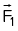 e 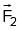. Nessa situação, em que direção e sentido esse corpo acelera?
O corpo acelera na direção e no sentido da força resultante, que podemos obter pela regra do paralelogramo. É a situação que observamos no arco e flecha, quando desprezamos o peso da seta, em relação à intensa tração na corda.
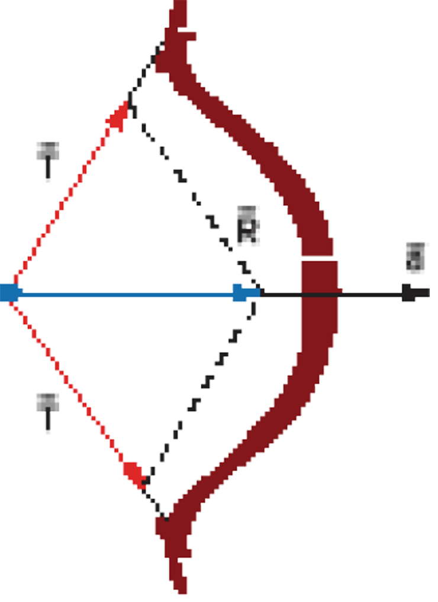
A combinação dos resultados anteriores encaminhou Newton a relacionar força resultante, massa do corpo e aceleração vetorial em uma única expressão:
A expressão do princípio fundamental destaca que os vetores e têm sempre mesma direção e mesmo sentido.
A título de aplicação, vamos considerar dois carros que, inicialmente, estão em repouso em uma pista horizontal e que, depois, são colocados em movimento. Apoiados no princípio fundamental, concluímos que:
- se os dois carros possuem massas iguais, adquire maior aceleração o carro sobre o qual age maior força resultante;
- se os dois veículos possuem massas diferentes, e estão sob ação de mesma força resultante, adquire maior aceleração o veículo que tem menor massa.
No princípio fundamental, a grandeza “massa de um corpo” comparece em seu pleno significado. Ela mede a inércia (ou seja, a “preguiça”) que tem o corpo para variar seu vetor velocidade. Se dois corpos estão sob a ação de uma mesma força resultante, o mais inerte tem menor aceleração.
Nas situações cotidianas, a medida da massa é interpretada como sendo proporcional à quantidade de matéria. Assim, é usual encontrarmos os termos 200 g de areia, 30 kg de ferro etc. se referindo a determinada porção de substância. No entanto, de maneira rigorosa, de acordo com o SI, a quantidade de matéria deve ser medida em mols.
Relação entre os vetores  , e nos movimentos retilíneos
, e nos movimentos retilíneos
Uma vez que o movimento retilíneo não apresenta aceleração centrípeta, o módulo do vetor aceleração total coincide com o módulo da aceleração escalar nesse tipo de movimento. Esse movimento pode ser aceleradoou retardado, dependendo de o vetor aceleração ter o mesmo sentido ou sentido contrário ao do vetor velocidade, ou ainda uniforme, no caso em que o vetor aceleração é nulo.
As imagens a seguir representam a disposição relativa dos vetores em cada uma das possibilidades do movimento retilíneo.
Acelerado.
Retardado.
Retilíneo uniforme.
Aceleração de queda livre
Se um corpo está em queda livre, somente a força peso atua sobre ele. Pelo princípio fundamental, temos:
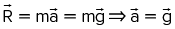
A intensidade da aceleração de queda livre é numericamente igual à intensidade do campo gravitacional. Esse resultado parece ser muito simples, mas ele ressalta que a aceleração de queda livre não depende da massa do corpo. Por isso, corpos de massas diferentes abandonados em queda livre, de uma mesma altura, caem ao mesmo tempo.
2
Um bloco com 50 kg de massa encontra-se em repouso sobre uma superfície horizontal perfeitamente lisa. Aplica-se ao bloco uma força , paralela à superfície e para a direita, de módulo 80 N, durante 10 s.
- Qual é a aceleração do bloco?
- Qual será a velocidade do bloco após 10 s?
- Se, após 10 s, a força é retirada, o que acontece com a velocidade do bloco?
Resolução
-
Como é a resultante das forças que atuam no bloco, podemos determinar a aceleração por meio da segunda lei de Newton:
 ⇒ a = 1,6 m/s2, horizontal para a direita.
⇒ a = 1,6 m/s2, horizontal para a direita.
-
Como:
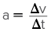, assim:
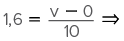 v = 16 m/s, horizontal para a direita.
-
Após a retirada da força, temos 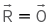. Portanto, o corpo continua em movimento retilíneo e uniforme com velocidade de 16 m/s, de acordo com a primeira lei de Newton.
Após a retirada da força, temos . Portanto, o corpo continua em movimento retilíneo e uniforme com velocidade de 16 m/s, de acordo com a primeira lei de Newton.
3
A Terra possui massa de 6,0 · 1024 kg. Perto da superfície do planeta, um corpo de 1 kg é atraído com uma força de 10 N. Considerando como referencial as estrelas distantes, determine:
- a aceleração de queda livre desse corpo;
- o valor da aceleração adquirida pela Terra.
Resolução
-
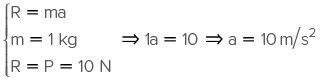
-
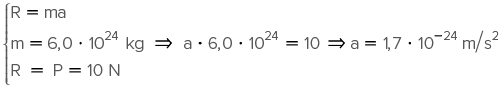
Vemos que a aceleração adquirida pela Terra pode ser desprezada, em relação à aceleração do corpo, com uma precisão de 24 casas após a vírgula.
4
No interior de um automóvel tem-se um pêndulo simples com a extremidade superior do fio fixa ao teto. Quando o automóvel está parado, o pêndulo fica na posição vertical. A massa do corpo suspenso é de 4 kg. Durante uma arrancada, a aceleração do automóvel foi constante, horizontal, para a direita e com intensidade 7,5 m/s2. Qual foi a tração no fio nesse intervalo, considerando g = 10 m/s²?
Resolução
Vamos analisar o corpo dependurado na ponta do fio. Esse corpo é acelerado com o carro, horizontalmente para a direita. Essa é a direção e esse é o sentido da resultante das forças. No corpo suspenso atua a força de tração e a força peso, conforme ilustra o diagrama a seguir.
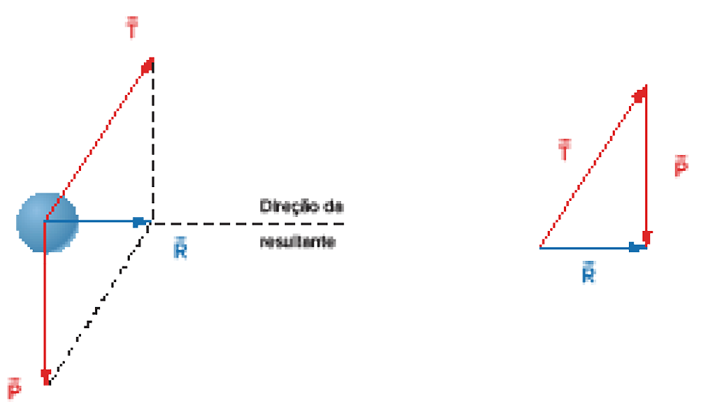
Temos: 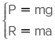, logo 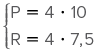. Assim, P = 40 N e R = 30 N.
Pelo teorema de Pitágoras, podemos escrever: T² = R² + P²
T² = 30² + 40² ⇒ T = 50 N.
Acelerômetro
Suponha que queiramos um instrumento para medir acelerações horizontais de um veículo. O pêndulo discutido no exercício resolvido proposto anteriormente pode ser uma opção nesse caso.
Para simplificar, vamos imaginar que o veículo esteja com aceleração constante, com o pêndulo preso no teto estático em relação ao carro. Nessa situação, podemos medir o ângulo entre o fio do pêndulo e a direção horizontal, conforme a figura a seguir.
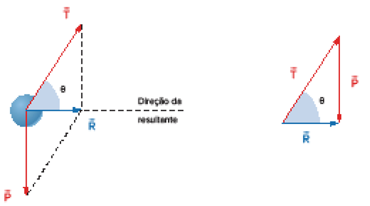
Esse ângulo vai nos informar a aceleração do veículo em relação à aceleração da gravidade.
A intensidade da força peso é P = mg e, pela segunda lei de Newton: R = ma. Pela composição das forças, temos:
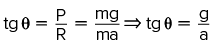
Portanto, 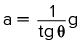.
Assim, tendo o ângulo 𝜽, a expressão obtida nos permite calcular a aceleração horizontal do veículo. Por exemplo, se 𝜽 = 45o, tg 𝜽 = 1, o veículo poderá ter uma aceleração de 1 g.
Dinamômetro
Voltemos à discussão do aparelho para medição de forças, agora tendo ciência da segunda lei de Newton e considerando o dinamômetro em movimento acelerado.
Por exemplo, na figura a seguir, a força horizontal está puxando um dinamômetro que, por sua vez, está ligado a um bloco de massa M apoiado em uma superfície sem atrito.
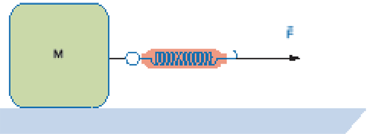
Qual será a leitura no dinamômetro, se sua massa é desprezível?
Isolando os corpos e assinalando as forças, teremos a seguinte disposição:

No dinamômetro, vamos aplicar o princípio fundamental. TemosR = F - T = ma e, como a massa do aparelho é desprezível, R = 0.
Assim, T = F, e é esse o esforço da tração que será indicado. No bloco, as forças peso e normal estão equilibradas, logo, R = T = F.
5
A figura a seguir representa um caminhão “rebocando” um automóvel em uma pista horizontal, através de um cabo de aço. A massa do automóvel é 1 000 kg. Considerando que nesse veículo age uma força de atrito de 2 000 N e a massa do cabo de aço, determine a indicação do dinamômetro ideal, sabendo que o automóvel é acelerado à razão de 2,0 m/s².
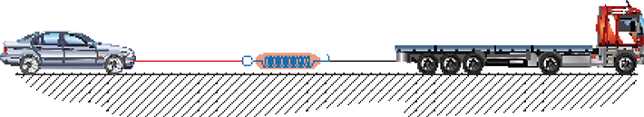
Resolução
As figuras a seguir mostram os diagramas de forças para o automóvel (forças: peso, normal, atrito e tração) e para o cabo de aço (tração). Observemos que representa a força de tração que o caminhão exerce no automóvel, através do cabo de aço, e é também a intensidade da força que o dinamômetro transmite.
Em relação ao movimento do automóvel, temos:
A aceleração é horizontal, portanto, na vertical a força resultante é nula. Logo, N = P.
Na horizontal, teremos um movimento acelerado .
R = ma
T - A = ma
T - 2 000 = 1 000 · 2
T = 4 000 N
Esse é o esforço da tração no dinamômetro.
Elevadores
O movimento dos elevadores comuns é vertical. Essa informação nos dá a direção do vetor velocidade. Como nos movimentos retilíneos o vetor velocidade e o vetor aceleração têm mesma direção, a aceleração nos elevadores, quando ocorre, é também vertical.
Já o sentido da aceleração depende das circunstâncias, que serão analisadas nesta seção.
Considerando um corpo simplesmente apoiado sobre o piso horizontal de um elevador, temos a ação de duas forças: a normal e o peso.
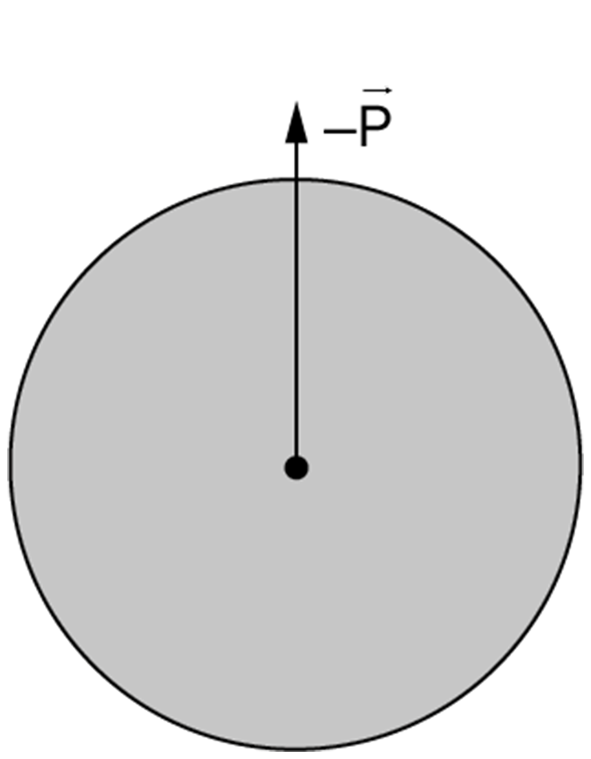
Corpo simplesmente apoiado sobre o piso de um elevador. O corpo interage com o apoio e a Terra. Veja os pares ação e reação.
A relação entre as intensidades das forças que agem no corpo depende do sentido da resultante. Se a resultante das forças for nula, o corpo estará em repouso ou em movimento retilíneo e uniforme – subindo ou descendo.
Como a aceleração e a resultante das forças têm mesmo sentido, se o movimento vertical do elevador for não uniforme, é o sentido da aceleração que vai nos guiar na comparação das intensidades das forças.
É importante lembrar que o sentido da aceleração indica o sentido da variação instantânea de velocidade, que não coincide, necessariamente, com o sentido do movimento. Se coincidir, o movimento é acelerado; se velocidade e aceleração tiverem sentidos contrários, o movimento é retardado.
Aceleração para cima
A figura a seguir ilustra um corpo situado em um elevador com aceleração para cima.
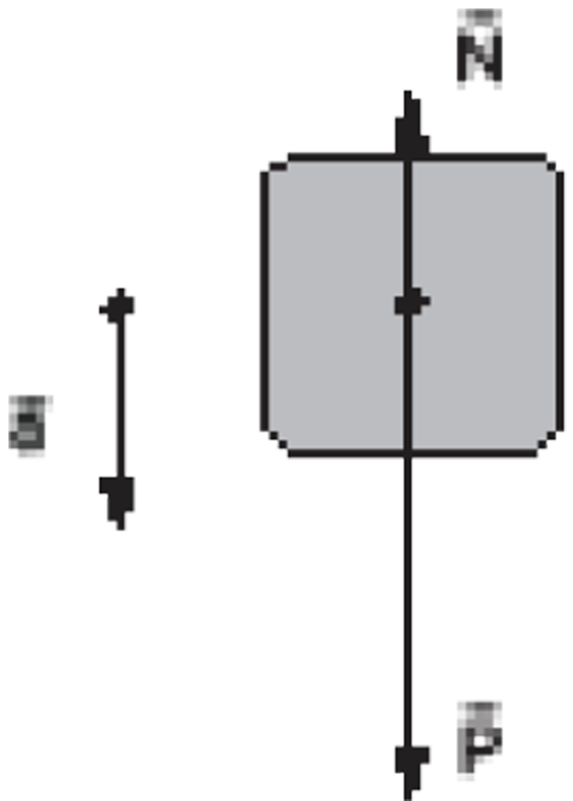
Corpo acelerado para cima.
Para que a resultante seja para cima, a intensidade da força aplicada pelo apoio deve ser maior que a intensidade do peso do corpo. Assim:
N > P
Aplicando-se o princípio fundamental da Dinâmica, temos:
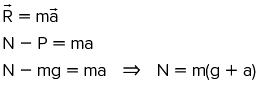
Imaginando que o corpo a que se refere o problema seja uma pessoa apoiada em um dinamômetro, a indicação no instrumento é chamada de peso aparente do corpo. A pessoa sente a força aplicada pelo apoio e, nessa situação, tem a sensação de estar mais “pesada”.
Nesse caso, considerando as duas possibilidades para o sentido do movimento, o elevador pode estar subindo acelerado ou descendo em movimento retardado, conforme ilustram as figuras seguintes.
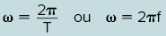
Aceleração para baixo
A figura seguinte ilustra o elevador com aceleração para baixo.
Corpo acelerado para baixo.
Agora, para que a resultante seja para baixo, a intensidade da força aplicada pelo apoio deve ser menor que a do peso do corpo. Assim:
N < P
Aplicando-se o princípio fundamental da Dinâmica, temos:
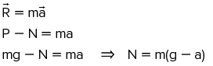
Uma pessoa nessa condição teria a sensação de estar mais “leve”, pois seu peso aparente seria menor que o real. Assim, considerando as duas possibilidades para o sentido do movimento, o elevador pode estar subindo retardado ou descendo em movimento acelerado, conforme ilustram as figuras seguintes.
O limite para a sensação de “perda” de peso ocorreria na situação do elevador em queda livre.
6
Uma pessoa decide pesar-se dentro de um elevador e, para tal fim, leva consigo uma balança de molas, na verdade, um dinamômetro. A escala desse aparelho é tal que, para uma força aplicada de 1 000 N, ela indica 100 kg.
Considere g = 10 m/s² e a massa da pessoa como 70 kg.
- Se a “pesagem” for feita com o elevador subindo ou descendo em movimento uniforme, qual será a indicação da balança?
- Qual será a indicação da balança se o elevador estiver subindo e acelerando 1 m/s?
- E se o elevador estiver descendo acelerado a 8 m/s²?
- E se o elevador estiver em queda livre?
- Qual seria a posição de equilíbrio e a intensidade da força de contato de um pacote de areia de 5 kg se o elevador estivesse com aceleração de 20 m/s² para baixo? A resposta depende de o elevador estar subindo ou descendo?
Resolução
-
Se a pessoa, com o elevador, estiver em movimento retilíneo uniforme, a resultante é nula. Dessa forma, a intensidade da força normal será a mesma da força peso.
N = P = mg, logo, N = 70 · 10. Assim, N = 700 N.
Como para cada 1 000 N a “balança” indica 100 kg, a indicação será de 70 kg.
-
Sabendo o sentido da aceleração, obtemos o sentido da resultante. Pelo sentido da resultante, concluímos que N > P.
A disposição dos vetores é apresentada na figura seguinte.
R = N - P = ma, logo, N - 700 = 70 · 1 ⇒ N = 770 N.
Pela proporção da escala, a balança indicará 77 kg.
-
Disposição dos vetores:
Temos: R = P - N = ma, logo, 700 – N = 70 · 8 ⇒ N = 140 N.
Pela proporção da escala, a balança indicará 14 kg.
-
Se o elevador estiver em queda livre (subindo ou descendo), temos 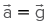. Assim:
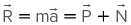. Como , obtemos:
⇒ N = 0.
O peso aparente do corpo será nulo. Essa situação é conhecida como estado de imponderabilidade. Qualquer que seja a massa do corpo, a indicação da balança será nula. Nesse sentido, o corpo não é “pesável”.
-
SComo a aceleração para baixo é maior que a da gravidade, deve existir uma força adicional para baixo além da força peso. Para a normal ser para baixo, o corpo deve estar apoiado no teto do elevador, por estranho que pareça.
. Como , obtemos:
⇒ N = 0.
A disposição dos vetores é apresentada na figura seguinte.
Temos: R = P +* N = ma, logo, N +* 50 = 5 · 20 ⇒ N = 50 N.
A indicação da balança será, portanto, 5 kg.

A resistência do ar é importante quando se vai empinar uma pipa.
Evgeny Atamanenko/Shutterstock.com
Resistência do ar
Ao movimentar-se por um fluido, por exemplo, o ar, um corpo vai interagindo com as várias porções do fluido que o rodeia. Dessas interações resulta o empuxo, a força de sustentação (lift) que permite o voo de aves e aviões, e também uma força oposta ao vetor velocidade do corpo, que na aviação é chamada de drag (arrasto).
No cotidiano, negligenciamos essa última força, mas, para um automóvel em uma rodovia rápida, ela não é desprezível, tendendo a retardar o movimento, e isso se reflete no consumo de combustível. Ou seja, o automóvel gasta combustível a fim de não parar, porque, por inércia, ele continuaria em movimento.
É a força de resistência do ar que nos permite entender a dinâmica dos paraquedas e das pipas que pairam nele. Um dos fatores que determinam a força de resistência do ar é a velocidade que o corpo tem em relação a esse meio.
Para um corpo abandonado em queda no ar, observamos que:
no início do movimento, a resistência do ar é nula, pois a velocidade inicial do corpo é nula;
à medida que a velocidade do corpo aumenta, a intensidade da resistência do ar também aumenta, mas a intensidade da força peso permanece constante;
dependendo da altura de queda, a intensidade da resistência do ar pode se igualar à intensidade da força peso. Quando isso acontece, a força resultante é nula, e o corpo passa a se movimentar com uma velocidade constante, chamada de velocidade terminal ou velocidade-limite.
No caso de velocidades subsônicas no ar (aviões comerciais, paraquedas, automóveis etc.), uma expressão que descreve essa força de maneira satisfatória é:
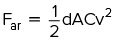
em que:
-
d é a densidade do ar. Em grandes altitudes, a densidade do ar é bem menor que ao nível do mar, e os aviões podem voar economizando muito combustível.
- A é a área frontal do corpo, conforme a figura a seguir.

Área frontal.
- C é o coeficiente de arrasto aerodinâmico, que é uma grandeza adimensional, mas depende da forma do corpo. Corpos mais aerodinâmicos têm menores coeficientes.
-
v é o módulo da velocidade do corpo em relação ao ar.
Quando abertos, os paraquedas oferecem uma área frontal expressiva para a ação da resistência do ar.
Considere que a área frontal de um paraquedas aberto seja de 35 m² e o coeficiente de arrasto aerodinâmico igual a 1. Se o conjunto paraquedista-paraquedas tem massa de 90 kg, a densidade do ar é 1,2 kg/m³ eg = 10 m/s². A velocidade terminal do paraquedas em relação ao ar pode ser calculada da seguinte forma:
Como e, na situação de velocidade-limite, essa força deve equilibrar o peso do conjunto, temos:
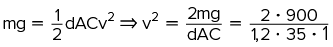 ⇒ v = 6,55 m/s ≅ 24 km/h
7
Qual seria a velocidade de uma gota de chuva que cai de uma nuvem a 2 880 m de altura se não houvesse a resistência do ar? (Considere g = 10 m/s2.)
Resolução
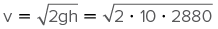, Ou seja, a gota seria quase supersônica. Você precisaria de um guarda-chuva blindado ao caminhar pela rua.
Sistema de corpos
Chama-se sistema de corpos um conjunto arbitrário de corpos escolhidos para o estudo. Eventualmente, o sistema se restringe a um único corpo, situação que foi analisada no capítulo anterior.
Neste capítulo, vamos aplicar as leis de Newton em situações que envolvem mais de um corpo. Nessas condições, deve-se ter uma atenção especial ao assinalar as forças, lembrando-se sempre do princípio da ação e reação. Finalmente, com todas as forças assinaladas, a resolução dos problemas, em geral, culmina com a aplicação da segunda lei de Newton:
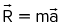
Considerando os dois membros da igualdade traduzida pelo princípio fundamental, vamos nos defrontar, basicamente, com duas situações:
- conhecendo todas as forças que estão agindo sobre um corpo, determinamos a força resultante e, a seguir, o vetor aceleração, que tem a mesma direção e o mesmo sentido da força resultante;
- pelas restrições mecânicas que o problema apresenta (vínculos, apoios, fios etc.), conhecemos o vetor aceleração e determinamos, assim, a força resultante, pois ela tem a mesma direção e o mesmo sentido do vetor aceleração.
Sistema de blocos
Quando dois, ou mais, blocos permanecem em contato e apoiados em uma mesma superfície, eles sofrem os mesmos deslocamentos em um mesmo intervalo de tempo. Assim, instante por instante, eles têm a mesma velocidade e a mesma aceleração. Essa é uma condição essencial que devemos observar para equacionar o problema.
Blocos em contato
A seguir, vamos examinar dois blocos que se mantêm em contato e interagem através de uma força normal.
Imagine que os blocos A e B, dispostos conforme a figura, estão apoiados em uma superfície horizontal sem atrito. Em seguida, uma força de 40 N é aplicada no bloco A.
Para a situação descrita, vamos determinar a aceleração adquirida pelo conjunto de blocos e a intensidade da força que o bloco A aplica no bloco B.
A superfície em que estão apoiados os blocos impõe que a aceleração seja horizontal, logo, na vertical as forças estarão equilibradas. Considerando todo o sistema formado pelos dois blocos, temos:
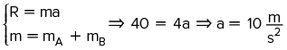
Na direção vertical, as forças estão equilibradas. Por isso, vamos assinalar apenas as forças horizontais, chamando de “f” a intensidade da força normal que o bloco A aplica em B.
Aplicando a segunda lei de Newton para o bloco B, temos:
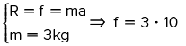; logo, f = 30 N
O bloco A recebeu a ação de uma força de 40 N. Desses 40 N, ele usou 10 N para obter sua aceleração, transmitindo ao segundo uma força f de 30 N.
Corpos interligados por um fio ideal
Vejamos agora situações em que o contato entre os corpos é feito através de fios.
Considere dois carrinhos de supermercado A e B, interligados por um cabo, que são puxados por um homem sobre uma superfície horizontal, conforme o seguinte esquema.
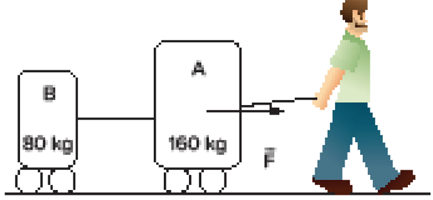
Desprezando os atritos, iremos determinar a força exercida pelo homem para acelerar o conjunto 2 m/s² e a tração no cabo que interliga os carrinhos nessas condições.
Por imposição da superfície em que estão apoiados os carrinhos, a aceleração é horizontal, portanto, na vertical a resultante é nula.
Na horizontal, considerando o sistema formado pelos dois corpos, temos:
R = F = (mA +* mB) · a ⇒F = 240 · 2 ⇒ F = 480 N.
O esquema a seguir ilustra as forças horizontais que agem nos carrinhos e no fio.
Aplicando a segunda Lei de Newton para o carrinho B, temos:R = T = mBa, logo, T = 80 · 2. Portanto, T = 160 N.
Polias
Dois corpos podem estar interligados por um fio, mas acelerando em direções diferentes. Isso é possível com a utilização de polias.
As polias, também conhecidas como roldanas, têm por finalidade mudar a direção de um fio tracionado. Elas são constituídas por um disco em cuja periferia passa o fio. O disco gira preso a um eixo em seu centro, conforme ilustrado na figura. A polia ideal tem massa (inércia) desprezível e pode girar livremente, sem atrito.
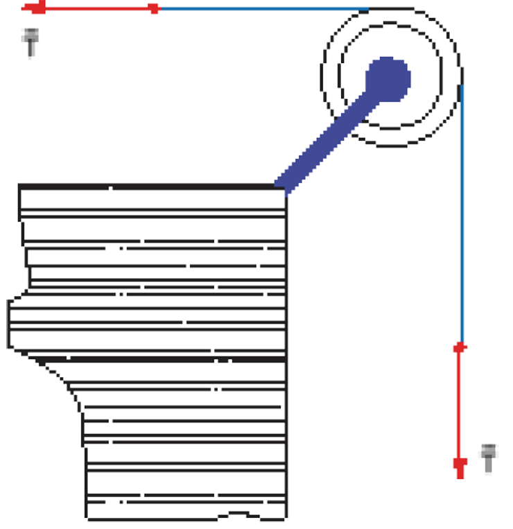
Como as massas do fio e da polia são desprezíveis, nas extremidades do fio temos a mesma intensidade para a força de tração, embora com direções diferentes.
Aplicação de polias
A seguir iremos analisar alguns arranjos de polias utilizados em alguns tipos de máquinas.
Máquina de Fletcher
O arranjo do exemplo seguinte denomina-se máquina de Fletcher. A ideia nesse arranjo é aumentar a inércia do sistema de corpos sem o decorrente aumento de peso. Para tanto, um dos corpos fica apoiado em um plano horizontal. Nesse corpo apoiado, a ação da força peso é equilibrada pela ação da força normal. Esse arranjo mecânico dos corpos permite, como veremos, que o sistema tenha aceleração bem menor que a de queda livre, possibilitando maior facilidade experimental para se efetuarem as medidas.
8
A figura a seguir representa um bloco A, de massa 18 kg, apoiado em uma superfície horizontal, sem atrito, e ligado através de um fio a um bloco B, de 2,0 kg, que se encontra dependurado. Considerando g = 10 m/s2, determine a aceleração do conjunto e a tração no fio que une os blocos.
Resolução
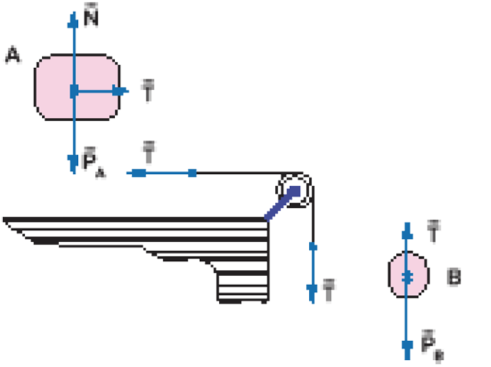
No bloco A agem as seguintes forças: peso, normal e tração. No bloco B, peso e tração.
Como não existe atrito entre o bloco A e a superfície horizontal e como NA = PA (se equilibram), então, a força de tração é a resultante das forças que agem no bloco A, que o colocarão em movimento acelerado para a direita. Se o bloco A acelera para a direita, o bloco B acelera para baixo e, portanto, PB > T. Assim, escrevemos
bloco A: R = T ⇒ mAa = T ⇒ 18a = T
bloco B: R = PB - T ⇒ mBa = mBg - T ⇒ 2a = 2 · 10 - T
Adicionando as duas equações, obtemos:
20a = 20 ⇒ a = 1,0 m/s²
e, substituindo na equação do bloco A: 18 · 1,0 = T ⇒ T = 18 N
Observe que, para o cálculo da aceleração escalar, poderíamos considerar o sistema formado pelos dois blocos com massa m = 18 +* 2, logo, m = 20 kg. Para esse conjunto, a força motriz é o peso do bloco B (20 N).
Usando-se a segunda lei de Newton, temos:
R = ma
20 = 20a ⇒ a = 1 m/s².
Máquina de Atwood
A priori, esse arranjo tem a mesma finalidade da máquina de Fletcher: possibilitar movimentos uniformemente acelerados com acelerações menos intensas que a de queda livre, facilitando, assim, as medidas.
A figura a seguir ilustra o arranjo da máquina de Atwood.
Considerando o corpo A mais pesado que o B, concluímos que ele acelera para baixo, enquanto o corpo B acelera para cima, com aceleração de mesma intensidade, pois o fio é inextensível. Sendo assim, os corpos não podem ter acelerações de intensidades diferentes.
O seguinte diagrama ilustra as forças que agem em cada corpo, já considerando que corpos ligados ao mesmo fio estão sujeitos à mesma tração.
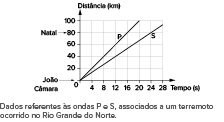
Temos que: 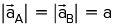
Aplicando o princípio fundamental a cada um dos corpos, obtemos:
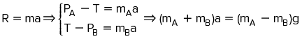 ⇒ 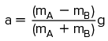
⇒
Para obtermos a tração no fio que está ligado aos blocos, ou substituímos a aceleração que determinamos em qualquer uma das equações ou isolamos a aceleração em ambas as equações e as igualamos, obtendo:
, portanto:
⇒
Na polia ideal (massa desprezível), a resultante é nula, portanto: T' = 2T
Observe que o fio preso ao eixo da polia não é o mesmo que está preso aos blocos, e, por isso, ele está sujeito a uma tração diferente (o dobro da tração que tem no fio que a envolve).
Polia móvel
O fato de a tração no fio preso ao eixo da polia ser o dobro da tração daquele que a envolve pode ser explorado com a intenção de se duplicar a intensidade de uma força. Observe no diagrama seguinte o bloco em equilíbrio (estático ou dinâmico) preso a uma polia ideal. Se o peso do bloco é de 80 N, o operador consegue equilibrá-lo exercendo uma força de apenas 40 N.
Quem exerce os outros 40 N que estão faltando? A resposta é o teto, onde está presa a outra extremidade do fio.
Aparentemente, a polia realizou a “mágica” de multiplicar forças. Entretanto, observe que, para erguer o corpo de 80 N por 1 m, é necessário que o operador puxe 2 m de fio, conforme indica a figura ao lado.
Ele vai aplicar somente metade da força que aplicaria diretamente no bloco, mas, em compensação, precisará exercer essa força ao longo de uma distância que é o dobro daquela pela qual o bloco será erguido.
Observe também que a polia superior não interfere no resultado. É uma polia fixa, que apenas substitui o incômodo esforço de erguer o fio, pois, ao puxá-lo, a tarefa se torna mais confortável.
Talha exponencial
A propriedade da polia móvel de transmitir em seu eixo o dobro da força de tração do fio que a envolve pode ser explorada seguidas vezes, conforme indica o seguinte esquema.
A cada polia móvel, a intensidade da força é duplicada. Se temos “n” polias móveis, a intensidade da força de tração obtida na última polia é então , portanto, F = 2nT – expressão em que, ressaltamos, n é o número de polias móveis, consideradas com massa desprezível.

Aplicando conhecimentos
1
Espcex Duas polias, A e B, ligadas por uma correia inextensível têm raios RA = 60 cm e RB = 20 cm, conforme o desenho abaixo.
Espcex Duas polias, A e B, ligadas por uma correia inextensível têm raios RA = 60 cm e RB = 20 cm, conforme o desenho abaixo.
- 10 rpm
- 20 rpm
- 80 rpm
- 90 rpm
- 120 rpm
2
Um móvel em MCU sobre uma trajetória de raio 10 m tem aceleração centrípeta 40 m/s2. Qual é o módulo da velocidade desse móvel?
3
UFMG “Kimbá caminhava firme, estava chegando. Parou na porta do prédio, olhando tudo. Sorriu para o porteiro. O elevador demorou.”
EVARISTO, 2014, p. 94.
Ao ler o texto, dois candidatos fizeram as seguintes afirmações:
Candidato 1: Kimbá caminhava firme, mas diminuiu sua velocidade, pois estava chegando. Enquanto ela parava, a força resultante e a aceleração de Kimbá tinham a mesma direção e sentido, mas sentido contrário à sua velocidade.
Candidato 2: Kimbá parou em frente à porta do prédio. Nessa situação, a velocidade e a aceleração dela são nulas, mas não a força resultante, que não pode ser nula para manter Kimbá em repouso.
Fizeram afirmações CORRETAS:
- Os candidatos 1 e 2.
- Apenas o candidato 1.
- Apenas o candidato 2
- Nenhum dos dois candidatos.
4
Quanto às leis de Newton que regem a Mecânica Clássica, julgue os itens a seguir, colocando V para os verdadeiros e F para os falsos.
Quando um bloco é puxado e arrastado, a ação supera a reação; caso contrário, o bloco ficaria parado.
- ( ) A segunda lei de Newton diz que as acelerações são proporcionais às forças que as produzem. Porém, é incorreto dizer o contrário, isto é, que as forças são proporcionais às acelerações que produzem.
- ( ) As leis de Newton são verificadas para observadores em repouso ou em MRU em relação a um referencial inercial.
- ( ) Não é necessária a atuação de uma resultante não nula para manter um corpo em movimento retilíneo uniforme.
- ( ) Pela segunda lei de Newton, a aceleração a que um corpo está sujeito sempre terá a mesma direção e o mesmo sentido da velocidade dele.
- ( ) Se uma única força age em um corpo, a aceleração que ele adquire terá a mesma direção e o mesmo sentido dessa força.
- ( ) Pela segunda lei de Newton, a resultante das forças aplicadas a um corpo e a aceleração por ele adquirida sempre têm mesma direção e mesmo sentido.
- ( ) Pela segunda lei de Newton, a resultante das forças aplicadas a um corpo e a aceleração por ele adquirida sempre têm mesma direção e mesmo sentido.
- ( ) Quando há uma resultante não nula aplicada a um corpo, essa resultante poderá modificar o módulo e a direção da velocidade dele, ou ambos.
5
UFMG Uma nave espacial se movimenta numa região do espaço onde as forças gravitacionais são desprezíveis. A nave desloca-se de X para Y com velocidade constante e em linha reta. No ponto Y, um motor lateral da nave é acionado e exerce sobre ela uma força constante, perpendicular à sua trajetória inicial. Depois de um certo intervalo de tempo, ao ser atingida a posição Z, o motor é desligado.
O diagrama que melhor representa a trajetória da nave, após o motor ter sido desligado em Z, é:
6
UEL-PR Um corpo de massa 200 g é submetido à ação das forças , coplanares, de módulos F1 = 5,0 N, F2 = 4,0 N e F3 = 2,0 N, conforme a figura a seguir.
A aceleração do corpo, em m/s2, é:
- 0,025
- 0,25
- 2,5
- 25
- 250
7
Um carrinho de massa igual a 5 kg é puxado por um fio sobre um plano horizontal sem atrito.
A tração máxima que o fio suporta vale 30 N.
- Qual é máxima aceleração que se pode imprimir ao carrinho para o fio não arrebentar?
- Existe uma máxima velocidade para o fio não arrebentar? Justifique.
8
Um motorista dirige seu automóvel em uma via retilínea horizontal com velocidade de 90 km/h, quando percebe um sinal de trânsito fechado. Ele imediatamente freia, impondo ao carro uma desaceleração constante de 2,5 m/s2 até que este atinja o repouso.
- Represente em uma figura a força resultante que age sobre o conjunto automóvel-motorista e os vetores velocidade e aceleração do conjunto durante o processo de frenagem.
- Se a massa do automóvel é igual a 720 kg e a do motorista é igual a 80 kg, calcule o módulo da resultante das forças que atuam sobre o conjunto automóvel-motorista, supondo que o motorista esteja solidário com o automóvel.
9
Unifor-CE Um caixote, de massa 200 kg, está parado sobre a carroceria de um caminhão que se move horizontalmente a 20 m/s. O motorista aplica os freios e consegue parar em 10 s. Se o caixote não desliza sobre a carroceria do caminhão, a força resultante sobre o caixote, suposta constante, tem intensidade, em newtons, de:
- 40
- 80
- 160
- 200
- 400
10
UFRJ A figura mostra um helicóptero que se move verticalmente em relação à Terra, transportando uma carga de 100 kg por meio de um cabo de aço. O cabo pode ser considerado inextensível e de massa desprezível quando comparada à da carga.
Considere g = 10 m/s2.
Suponha que, num determinado instante, a tração no cabo de aço seja igual a 1 200 N.
- Determine, neste instante, o sentido do vetor aceleração da carga e calcule o seu módulo.
- É possível saber se, nesse instante, o helicóptero está subindo ou descendo? Justifique a sua resposta.
11
Os corpos A e B, de massas mA = 1 kg e mB = 2 kg, são presos por um fio de massa desprezível. O sistema é acelerado verticalmente por uma força de 36 N aplicada ao corpo A. O campo gravitacional local é 10 m/s2.
- Calcule a aceleração do conjunto.
- Calcule a força trocada pelos dois corpos.
12
Uerj Os corpos A e B, ligados ao dinamômetro D por fios inextensíveis, deslocam-se em movimento uniformemente acelerado. Observe a representação desse sistema, posicionado sobre a bancada de um laboratório.
A massa de A é igual a 10 kg e a indicação no dinamômetro é igual a 40 N.
Desprezando qualquer atrito e as massas das roldanas e dos fios, estime a massa de B.
13
IFBA 2018 Na montagem experimental abaixo, os blocos A, B e C têm massas mA = 2 kg, mB = 3,0 kg e mC = 5,0 kg. Desprezam-se os atritos e a resistência do ar. Os fios e as polias são ideais e adote g = 10 m/s2.
No fio que liga o bloco B com o bloco C, está intercalada uma mola leve de constante elástica 3,5 · 103 N/m. Com o sistema em movimento, a deformação da mola é:
- 2,0 cm
- 1,0 cm
- 1,5 cm
- 2,8 cm
- 4,2 cm
Consolidando saberes
1
No Museu de Ciência e Tecnologia da UEL, existem experimentos que possibilitam ao público visitante entender a Física de maneira divertida. Um deles é a base giratória usada para explicar situações nas quais as grandezas físicas se relacionam no movimento circular.
Sobre movimento circular em mecânica, considere as afirmativas a seguir.
- No movimento circular, a resultante das forças que agem sobre o visitante é orientada para a direção tangencial.
- No movimento circular e uniforme, a aceleração linear média será maior quando o intervalo de tempo para percorrer o ângulo descrito for menor.
- No movimento circular retardado, a força tangencial deverá ter sentido contrário ao da velocidade vetorial.
- No movimento circular e uniforme, a aceleração centrípeta terá um valor maior quando o raio da trajetória for menor.
Assinale a alternativa correta.
- Somente as afirmativas I e II são corretas.
- Somente as afirmativas I e IV são corretas.
- Somente as afirmativas III e IV são corretas.
- Somente as afirmativas I, II e III são corretas.
- Somente as afirmativas II, III e IV são corretas.
2
O disco da figura a seguir é movido por um motor e gira em torno de um eixo que passa pelo centro. Em dado instante o motor está desligado e o disco, parado, quando então é acionado o motor e ele acelera uniformemente. Após 2 s, a velocidade de um ponto da borda do disco é 12 m/s. Pergunta-se:
- Qual é a aceleração tangencial de um ponto da borda do disco?
- Qual é a aceleração vetorial de um ponto da borda do disco no instante t = 1 s?
3
Fuvest-SP Uma bolinha pendurada na extremidade de uma mola vertical executa um movimento oscilatório. Na situação da figura, a mola encontra-se comprimida e a bolinha está subindo com velocidade . Indicando por Fñ a força da mola e por Pñ a força peso aplicadas na bolinha, o único esquema que pode representar tais forças na situação descrita acima é
4
Fuvest-SP Duas caixas, A e B, de massas mA e mB, respectivamente, precisam ser entregues no 40° andar de um edifício. O entregador resolve subir com as duas caixas em uma única viagem de elevador e a figura I ilustra como as caixas foram empilhadas. Um sistema constituído por motor e freios é responsável pela movimentação do elevador; as figuras II e III ilustram o comportamento da aceleração e da velocidade do elevador. O elevador é acelerado ou desacelerado durante curtos intervalos de tempo, após o que ele adquire velocidade constante.
Analise a situação sob o ponto de vista de um observador parado no solo. Os itens a,b e c, referem-se ao instante de tempo em que o elevador está subindo com o valor máximo da aceleração, cujo módulo é a = 1 m/s².
- Obtenha o módulo da força resultante, FA, que atua sobre a caixa A.
- As figuras na página de respostas representam esquematicamente as duas caixas e o chão do elevador. Faça, nas figuras correspondentes, os diagramas de forças indicando as que agem na caixa A e na caixa B.
- Obtenha o módulo, FS, da força de contato exercida pela caixa A sobre a caixa B.
- Como o cliente recusou a entrega, o entregador voltou com as caixas. Considere agora um instante em que o elevador está descendo com aceleração para baixo de módulo a = 1 m/s2. Obtenha o módulo FD da força de contato exercida pela caixa A sobre a caixa B.
Note e adote: Aceleração da gravidade: g = 10 m/s2.
5
Unesp Uma das modalidades esportivas em que nossos atletas têm sido premiados em competições olímpicas é a de barco a vela. Considere uma situação em que um barco de 100 kg, conduzido por um velejador com massa de 60 kg, partindo do repouso, se desloca sob a ação do vento em movimento uniformemente acelerado, até atingir a velocidade de 18 km/h. A partir desse instante, passa a navegar com velocidade constante. Se o barco navegou 25 m em movimento uniformemente acelerado, qual é o valor da força aplicada sobre o barco? Despreze resistências ao movimento do barco.
6
Uerj Um corpo de massa igual a 6,0 kg move-se com velocidade constante de 0,4 m/s, no intervalo de 0 s a 0,5 s.
Considere que, a partir de 0,5 s, esse corpo é impulsionado por uma força de módulo constante e de mesmo sentido que a velocidade, durante 1,0 s.
O gráfico abaixo ilustra o comportamento da força em função do tempo.
Calcule a velocidade do corpo no instante t = 1,5 s.
7
UFMG Uma pessoa entra num elevador carregando uma caixa pendurada por um barbante frágil, como mostra a figura. O elevador sai do 6° andar e só para no térreo.
É correto afirmar que o barbante poderá arrebentar:
- no momento em que o elevador entrar em movimento, no 6° andar.
- no momento em que o elevador parar no térreo.
- quando o elevador estiver em movimento, entre o 5° e o 2° andares.
- somente numa situação em que o elevador estiver subindo.
8
Unesp O ponto C de uma haste homogênea AB, de seção reta uniforme com massa desprezível, está preso, através de uma mola ideal, ao ponto D de uma parede vertical. A extremidade A da haste está articulada em O. A haste sustenta pesos de 20 N, 40 N e 60 N e está em equilíbrio estático, na horizontal, conforme representado no desenho abaixo. Sabendo que a deformação na mola é de 10 cm, então o valor da constante elástica da mola é
Dados: sen 30o = cos 60o = ½
cos 30o = sen 60o = √3/2
- 1900 N/m.
- 2400 N/m.
- 3800 N/m.
- 4300 N/m.
- 7600 N/m.
9
EsPCEx O sistema de polias, sendo uma fixa e três móveis, encontra-se em equilíbrio estático, conforme mostra o desenho. A constante elástica da mola, ideal, de peso desprezível, é igual a 50 N/cm e a força Fñna extremidade da corda é de intensidade igual a 100 N. Os fios e as polias, iguais, são ideais.
O valor do peso do corpo X e a deformação sofrida pela mola são, respectivamente,
Considerando as polias e os fios como sendo ideais e desprezando os pesos dos dinamômetros e dos suportes, a relação entre as intensidades das forças F1 e F2, medidas, respectivamente, em D1 e D2, é:
- 800 N e 16 cm.
- 400 N e 8 cm.
- 600 N e 7 cm.
- 800 N e 8 cm.
- 950 N e 10 cm.
ITA Num certo experimento, três cilindros idênticos encontram-se em contato pleno entre si, apoiados sobre uma mesa e sob a ação de uma força horizontal F, constante, aplicada na altura do centro de massa do cilindro da esquerda, perpendicularmente ao seu eixo, conforme a figura. Desconsiderando qualquer tipo de atrito, para que os três cilindros permaneçam em contato entre si, a aceleração a provocada pela força deve ser tal que

No enem é assim
As questões selecionadas nesta seção são prioritariamente do Enem, mas questões de vestibulares diversos que apresentam características semelhantes aos itens do referido exame também podem ser usadas como recurso para estudo.
1
UFRN Na correção ortodôntica de uma arcada dentária, foi passado, num dos dentes caninos, um elástico. As extremidades desse elástico foram amarradas a dois molares, um de cada lado da arcada, conforme a figura a seguir. A tensão no elástico é de 10,0 N e o ângulo formado pelas duas partes do elástico é de 90o.
Nas figuras 1 e 2, estão representadas duas possibilidades para a direção e o sentido da força resultante, FR, que está atuando sobre o referido dente canino.
Assinale a opção na qual se indica, corretamente, a figura que representa FR e o valor de sua intensidade.
- Figura 1 e 14,1 N
- Figura 2 e 14,1 N
- Figura 1 e 10,0 N
- Figura 2 e 10,0 N
2
UFRGS-RS 2014 Na figura a seguir, blocos idênticos estão suspensos por cordas idênticas em três situações distintas, (1), (2) e (3). Assinale a alternativa que apresenta as situações na ordem crescente de probabilidade de rompimento das cordas. (O sinal de igualdade a seguir indica situações com a mesma probabilidade de rompimento.)
- (3), (2), (1).
- (3), (2) = (1).
- (1), (2), (3).
- (1) = (2), (3).
- (1) = (2) = (3).
3
Enem PPL 2014 Na Antiguidade, algumas pessoas acreditavam que, no lançamento oblíquo de um objeto, a resultante das forças que atuavam sobre ele tinha o mesmo sentido da velocidade em todos os instantes do movimento. Isso não está de acordo com as interpretações científicas atualmente utilizadas para explicar esse fenômeno.
Desprezando a resistência do ar, qual é a direção e o sentido do vetor força resultante que atua sobre o objeto no ponto mais alto da trajetória?
- Indefinido, pois ele é nulo, assim como a velocidade vertical nesse ponto.
- Vertical para baixo, pois somente o peso está presente durante o movimento.
- Horizontal no sentido do movimento, pois devido à inércia o objeto mantém seu movimento.
- Inclinado na direção do lançamento, pois a força inicial que atua sobre o objeto é constante.
- Inclinado para baixo e no sentido do movimento, pois aponta para o ponto onde o objeto cairá.
4
UEL 2017 Leia a tirinha a seguir e responda à questão.
Com base no diálogo entre Jon e Garfield, expresso na tirinha, e nas Leis de Newton para a gravitação universal, assinale a alternativa correta.
- Jon quis dizer que Garfield precisa perder massa e não peso, ou seja, Jon tem a mesma ideia de um comerciante que usa uma balança comum.
- Jon sabe que, quando Garfield sobe em uma balança, ela mede exatamente sua massa com intensidade definida em quilograma-força.
- Jon percebeu a intenção de Garfield, mas sabe que, devido à constante de gravitação universal “g”, o peso do gato será o mesmo em qualquer planeta.
- Quando Garfield sobe em uma balança, ela mede exatamente seu peso aparente, visto que o ar funciona como um fluido hidrostático.
- Garfield sabe que, se ele for a um planeta cuja gravidade seja menor, o peso será menor, pois nesse planeta a massa aferida será menor.
5
UEL-PR 2018 Analise as figuras a seguir.

Um astronauta chegou a um planeta desconhecido e deseja medir a aceleração da gravidade local. Para isso, ele conta com um sistema massa-mola como o da figura 1. Esse sistema foi calibrado na Terra (g = 10 m/s2), e a relação entre a distensão da mola e a massa pendurada em sua extremidade é mostrada no gráfico da figura 2.
Devido à aceleração da gravidade do planeta, quando o astronauta pendurou uma massa de 10 gramas, a mola distendeu 1,5 cm.
A partir dessas informações, responda aos itens a seguir.
- Determine a constante elástica da mola na unidade de N/m.Justifique sua resposta, apresentando os cálculos envolvidos na resolução deste item
- Determine a aceleração da gravidade do planeta de destino do astronauta, em m/s2. Justifique sua resposta, apresentando os cálculos envolvidos na resolução deste item.
6
Enem PPL 2018 Com um dedo, um garoto pressiona contra a parede duas moedas, de R$ 0,10 e R$ 1,00, uma sobre a outra, mantendo-as paradas. Em contato com o dedo está a moeda de R$ 0,10 e contra a parede está a de R$ 1,00. O peso da moeda de R$ 0,10 é 0,05 N e o da de R$ 1,00 é 0,09 N. A força de atrito exercida pela parede é suficiente para impedir que as moedas caiam.
Qual é a força de atrito entre a parede e a moeda de R$ 1,00?
- 0,04 N
- 0,05 N
- 0,07 N
- 0,09 N
- 0,14 N
7
Uerj No interior de um avião que se desloca horizontalmente em relação ao solo, com velocidade constante de 1 000 km/h, um passageiro deixa cair um copo. Observe a ilustração a seguir, na qual estão indicados quatro pontos no piso do corredor do avião e a posição desse passageiro.
O copo, ao cair, atinge o piso do avião próximo ao ponto indicado pela seguinte letra:
- P
- Q
- R
- S
8
Cefet-MG A figura mostra um bloco D de massa 0,50 kg preso a uma corda inextensível que passa por uma roldana. A outra extremidade da corda está presa à barra CA que pode girar em torno do eixo fixado à parede. Desprezando-se as forças de atrito e as massas da corda, da barra e da roldana, torna-se possível movimentar o bloco B, de 2,0 kg, ao longo da barra horizontal.
A posição X, em cm, do bloco B para manter o sistema em equilíbrio estático é
- 20.
- 15.
- 10.
- 5.
- 2,5.
9
Enem No dia 27 de junho de 2011, o asteroide 2011 MD, com cerca de 10 m de diâmetro, passou a 12 mil quilômetros do planeta Terra, uma distância menor do que a órbita de um satélite. A trajetória do asteroide é apresentada na figura.
A explicação física para a trajetória descrita é o fato de o asteroide
- deslocar-se em um local onde a resistência do ar é nula.
- deslocar-se em um ambiente onde não há interação gravitacional.
- sofrer a ação de uma força resultante no mesmo sentido de sua velocidade.
- sofrer a ação de uma força gravitacional resultante no sentido contrário ao de sua velocidade.
- estar sob a ação de uma força resultante cuja direção é diferente da direção de sua velocidade.
10
Enem Em um dia sem vento, ao saltar de um avião, um paraquedista cai verticalmente até atingir a velocidade limite. No instante em que o paraquedas é aberto (instante TA), ocorre a diminuição de sua velocidade de queda. Algum tempo após a abertura do paraquedas, ele passa a ter velocidade de queda constante, que possibilita sua aterrissagem em segurança
Que gráfico representa a força resultante sobre o paraquedista, durante o seu movimento de queda?